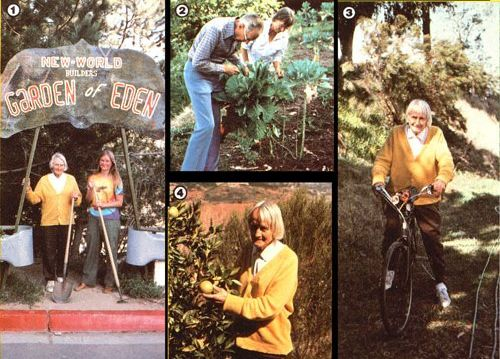

The "Garden of Eden" lies just below the chemistry building on San Diego State University's campus. Less than 10 years ago, the spot was simply a barren and rocky hillside overlooking the freeway . . . but that "useless" plot of land has been terraced into a beautiful, one-acre paradise by 83-year-old Quincy John Workman, who welcomes curious visitors with a sign that announces: "Working for survival of mankind, nonpollution, ecology action, natural living, organic gardening, full production, no destruction, free distribution. "
Workman, who founded the "New World Builders" to promote such goals, began the garden as a symbol of hope for a healthier, more productive world. Today, the organic "Elysian Field " contains over 40 fruit trees . . . as well as numerous perennial herbs such as comfrey and mint.
"There's a unique study program going on here," says Quincy John of the student volunteers who come to him to learn about organic gardening. "I demonstrate how to grow things . . . rather than merely teach theory. My pupils plant, water, and learn how to deal with parasites and other garden pests. I see work in the garden as a step toward self-sufficiency and survival. "
This remarkable man was once a toy manufacturer in Birmingham, Alabama. After his business went bankrupt during the depression, Quincy spent over 40 years working at various engineering jobs . . . before devoting himself to the "Garden of Eden".
A critic of the American economy and the banking system (which he says is run by a "den of thieves") and an active champion of Proposition 13, Quincy John had to look long and hard before he found a plato nourish his dream of a "New World".
After finally gaining permission from reluctant university administration, the oc-togenarian removed eucalyptus trees terraced the rocky land . . . planted orchards and some castor beans (poison black-leaved plants "which are certain keep them gophers out") . . . and, to satisfy the university, built a trailer/ office "so could be easily-and quickly-moved".
"Nine years ago," says Quincy John Workman as he proudly surveys his garden "I began to make this patch of nothing in to a fruitful acre of land . . . and I plan keep it thrivin' until the day I die!
"You see," he adds, "Mother Nature gives us everything we have . . . and her universal laws are the only ones we ever need to follow."
|
[1] Quincy John Workman, founder of the New World Builders?and the author, Karen Piet?at the entrance to San Diego State University's ""Garden of Eden"". [2] Quincy's students learn organic gardening by ""doing it"", rather than through theories. Here, plants undergo a daily bug inspection by dedicated volunteers. [3] Though he's 83 years old, Mr. Workman?a ""volcano ""of energy?still rides his ""clunker"" bicycle 15 to 20 miles a day! [4] Quincy John is rightly proud of the more than 40 productive fruit trees that cover the formerly ""useless"" rocky hillside overlooking the San Diego Freeway, |
 |
|